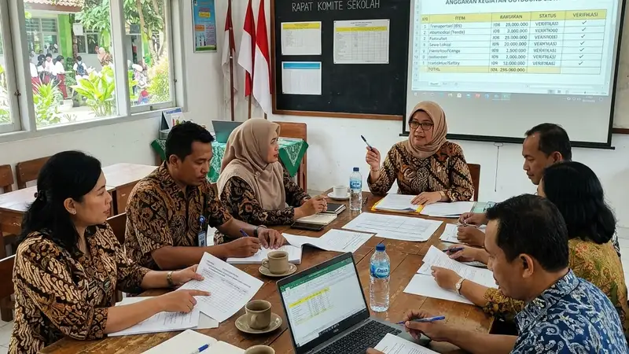

Biaya outbound LDKS & MPLS sekolah dipengaruhi oleh jumlah peserta, lokasi kegiatan, jenis permainan, serta kelengkapan fasilitas yang digunakan selama program berlangsung.
- Biaya outbound umumnya dihitung berdasarkan jumlah peserta dan durasi kegiatan.
- Lokasi dan kelengkapan fasilitas turut memengaruhi besaran biaya secara signifikan.
- Kesalahan umum sering terjadi akibat kurangnya briefing keselamatan dan pengawasan.
- Perencanaan anggaran yang transparan membantu sekolah menghindari biaya tak terduga.
- Evaluasi pasca kegiatan penting untuk perbaikan program di tahun berikutnya.
Apa Saja Faktor yang Memengaruhi Biaya Outbound LDKS & MPLS?
Faktor yang memengaruhi biaya outbound LDKS & MPLS meliputi jumlah peserta, durasi kegiatan, lokasi pelaksanaan, jenis permainan yang digunakan, serta kelengkapan fasilitas pendukung seperti konsumsi dan perlengkapan keselamatan.
Jumlah peserta menjadi salah satu faktor utama karena memengaruhi kebutuhan jumlah fasilitator serta perlengkapan permainan yang harus disediakan. Durasi kegiatan juga berpengaruh, di mana program yang berlangsung lebih dari satu hari umumnya membutuhkan biaya tambahan untuk akomodasi maupun konsumsi peserta.
Lokasi pelaksanaan turut menjadi variabel penting. Kegiatan yang dilaksanakan di area sekolah cenderung memiliki biaya lebih rendah dibandingkan kegiatan yang dilaksanakan di lokasi luar sekolah yang memerlukan biaya sewa tempat maupun transportasi. Jenis permainan yang dipilih, terutama apabila melibatkan peralatan khusus, juga dapat menambah komponen biaya secara keseluruhan.
Bagaimana Cara Menyusun Anggaran Outbound Sekolah yang Realistis?
Cara menyusun anggaran outbound sekolah yang realistis adalah dengan merinci setiap komponen biaya secara terpisah, mulai dari jasa fasilitator, perlengkapan, konsumsi, hingga biaya lokasi, sebelum menentukan total anggaran akhir.
Panitia sebaiknya meminta rincian biaya per komponen dari penyedia jasa, bukan hanya angka total, agar dapat mengidentifikasi komponen mana yang bisa disesuaikan apabila anggaran sekolah terbatas. Pendekatan ini juga membantu panitia membandingkan penawaran antarpenyedia jasa secara lebih objektif, karena perbandingan dilakukan berdasarkan komponen yang setara.
Apa Kesalahan Umum yang Sering Terjadi dalam Penyelenggaraan Outbound Sekolah?
Kesalahan umum yang sering terjadi dalam penyelenggaraan outbound sekolah meliputi kurangnya briefing keselamatan, pemilihan permainan yang tidak sesuai usia, minimnya pengawasan, dan anggaran yang disusun tanpa rincian jelas.
Kesalahan pertama yang cukup sering ditemui adalah panitia tidak memberikan briefing keselamatan yang memadai sebelum kegiatan dimulai, sehingga peserta tidak sepenuhnya memahami aturan permainan maupun risiko yang mungkin terjadi. Kesalahan kedua adalah memilih jenis permainan yang terlalu menantang secara fisik untuk kelompok usia tertentu, terutama pada kegiatan MPLS yang melibatkan siswa baru dengan kondisi fisik yang beragam.
Kesalahan ketiga berkaitan dengan pengawasan yang tidak memadai, baik dari sisi rasio fasilitator terhadap jumlah peserta maupun pengawasan terhadap potensi senioritas atau bullying terselubung dalam kegiatan kelompok. Hal ini bertentangan dengan semangat Permendikbud Nomor 18 Tahun 2016 yang menegaskan bahwa MPLS harus bebas dari unsur kekerasan maupun perpeloncoan dalam bentuk apa pun.
Kesalahan keempat adalah menyusun anggaran tanpa rincian komponen yang jelas, sehingga sekolah berisiko menghadapi biaya tambahan di luar perkiraan awal, misalnya akibat perubahan jumlah peserta atau penambahan fasilitas mendadak.
Bagaimana Cara Menghindari Kesalahan Anggaran Outbound Sekolah?
Cara menghindari kesalahan anggaran outbound sekolah adalah dengan menetapkan rincian biaya sejak tahap perencanaan, menyediakan dana cadangan, dan melakukan konfirmasi ulang jumlah peserta sebelum hari pelaksanaan.
Panitia sebaiknya menetapkan estimasi jumlah peserta final beberapa hari sebelum pelaksanaan, karena perubahan jumlah peserta secara mendadak sering menjadi penyebab utama pembengkakan biaya. Menyediakan dana cadangan sekitar sepuluh persen dari total anggaran juga dapat membantu mengantisipasi kebutuhan tak terduga, seperti perubahan cuaca yang memerlukan penyesuaian lokasi atau perlengkapan tambahan.
Mengapa Evaluasi Pasca Kegiatan Penting untuk Outbound Sekolah?
Evaluasi pasca kegiatan penting untuk outbound sekolah karena membantu panitia mengidentifikasi kesalahan yang perlu diperbaiki serta mengukur efektivitas program terhadap tujuan LDKS atau MPLS yang telah ditetapkan.
Evaluasi dapat dilakukan melalui pengumpulan umpan balik dari peserta maupun fasilitator terkait kelancaran kegiatan, kesesuaian permainan dengan tujuan pembelajaran, serta kendala teknis yang terjadi di lapangan. Hasil evaluasi ini berguna sebagai bahan pertimbangan penyusunan program outbound pada tahun ajaran berikutnya, sehingga kesalahan yang sama dapat diminimalkan.
FAQ
Apa saja komponen utama yang memengaruhi biaya outbound sekolah?
Komponen utama yang memengaruhi biaya outbound sekolah meliputi jumlah peserta, durasi kegiatan, lokasi pelaksanaan, dan jenis permainan yang digunakan.
Apakah outbound di area sekolah lebih murah dibandingkan di luar sekolah?
Secara umum, outbound yang dilaksanakan di area sekolah cenderung memiliki biaya lebih rendah karena tidak memerlukan biaya sewa tempat maupun transportasi tambahan.
Apa kesalahan paling sering terjadi dalam penyelenggaraan outbound MPLS?
Kesalahan yang paling sering terjadi adalah kurangnya briefing keselamatan serta pengawasan yang tidak memadai terhadap potensi senioritas atau bullying selama kegiatan berlangsung.
Arya
penulis artikel yang sudah berpengalaman di dalam dunia wisata outbound Batu Malang.